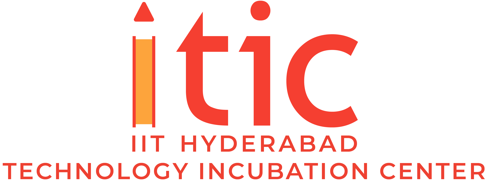

TiHAN and iTIC Incubator at IIT Hyderabad is launching OTTONOMO'22, a grand challenge to identify impactful solutions to address the bottlenecks in the domain of Autonomous Navigation.
Partners:


TiHAN and iTIC Incubator at IIT Hyderabad is launching OTTONOMO'22, a grand challenge to identify impactful solutions to address the bottlenecks in the domain of Autonomous Navigation.
Partners:
TiHAN stands for Technology Innovation Hub on Autonomous Navigation and Data Acquisition Systems at IIT Hyderabad. iTIC Incubator focuses on supporting entrepreneurs building deep tech startups through their incubation and acceleration programs.
To leverage the innovation capabilities of teams around the world who are passionate to solve problems of the Autonomous Navigation industry.TiHAN and itic Incubator are collaborating to provide access to the platform, institutions, and resources which can be engaged in the process of solution identification based on the problems sourced from the industry.
Eye gaze detection solution for driver monitoring systems
In-vehicle driver monitoring systems are going to be a crucial element of vehicles of the future. One important function of such systems is to determine if the driver is paying attention to the road. If not, the system alerts the driver to bring his/her attention back to the road. One way to accomplish this is to monitor the gaze of the driver’s eyes. However, due to the relatively small size of the iris of the eye, detecting and tracking eye gaze is a very difficult challenge. The objective is to develop an innovative and affordable eye gaze detection solution that runs in real-time, is robust in its operation, working under varying lighting conditions and for different people, and is vehicle agnostic.
Vision-based ADAS solutions for Indian use cases for either or all of the following functionalities: FCW / LDW / LKA / Pedestrian detection / Automatic parking / ACC / AEB / Potholes / Speed etc
ADAS is an emerging field and an intermediate state in achieving full autonomy for road vehicles. A fully autonomous vehicle requires a complete suite of sensors to perceive the surrounding environment around the vehicle. However, the complete suite of sensors includes many expensive sensors which can increase the cost of the solution. As the Indian market is price sensitive, the need of the hour is to create cost-effective ADAS solutions. The recent advancements in computer vision have enabled us to demonstrate advanced features related to the ADAS field. The solution demands to create ADAS solutions for Forward Collision Warning/ Lane Departure Warning/ Pedestrian Detection using camera sensors only. The solution can include a single mono camera or an array of camera sensors working in tandem to give stereo vision to identify objects in the field of view and estimate their relative distances from the camera sensors. The output of the vision algorithm would be a list of objects/features detected by the sensors and their respective properties (distance, object class, lane marking type, etc.)
Automation of fork-lift for automatic material handling and transportation within factory/warehouse environment
Automation of forklifts is crucial for Industry 4.0 applications. There is a high demand for automation for handling hazardous materials. The automation of the forklift includes automating all functions of the forklift that are required to pick and drop the material from one location to another without the supervision of any human operator. The system should be capable of not only manipulating the material to be handled but also perceive its surroundings and find a way to navigate from the start position to the goal position. The forklift is required to be fitted with the necessary sensors and actuators to accomplish the task. There needs to be an onboard computer that processes the information received by the sensors installed on the forklift. And can send commands to the actuators to complete the given task.
Smart Surveillance & Patrolling using Autonomous Ground Vehicles
At present, many man-hours are spent on the physical patrolling of border areas and compounds. If someone is breaching in the absence of a guard, the guard will know only when they reach the breach site. Fencing wires are unreliable and easy to breach; it is challenging to be available at all locations in large areas. Also, it takes a lot of time to cover the compound walls if the site is significant. Develop a Technology that can address this issue partially or entirely. Using this technology use case for autonomous and unmanned ground vehicles, an easy-to-use, as well as a cost-effective surveillance system, can be proposed.
Security of Connected Vehicles
Today’s cars employ a series of intelligent technologies such as blind-spot detection, adaptive headlights, lane keep assist, collision warning, adaptive cruise control, reversing camera, hill assist, crash-imminent braking. Further, with everyone wanting to stay connected all the time, car designers are making cars in line with this growing trend. This makes modern-day automobiles more sophisticated, extremely complicated, and highly connected systems. While the connected autonomous technologies are expected to make the cars safer, more energy-efficient, and more intelligent systems, the highly connected nature of these cars makes them extremely vulnerable to cyber-attacks. By gaining access to the car, hackers can compromise safety-critical functions endangering the life of the passengers seated in the car. The objective of the present topic is to address the potential cybersecurity threats in modern vehicles, their impact, and the possible countermeasures to safeguard the vehicle against potential attacks
Teams of 2 to 4 enthusiastic individuals or startups are eligible to compete in the OTTONOMO'22.
A team can apply in only one Problem Statement.
Startups competing must comply with the definition given by DPIIT.
OTTONOMO’22 starts on February 1, 2022. The last date to apply is February 25, 2022, after which shortlisting of startups for the bootcamp will be announced in min March. The six-week bootcamp will begin during the third week of March and conclude by First week of May, followed by the finale.
The solutions designed/developed by the shortlisted teams should have substantial engineering or technology components. These solutions can spin off into startups or if not, can be taken up by industry for further perusal.
After shortlisting the applications received, competent teams will be chosen for each of the problem statements to work on. Shortlisted teams will go through a virtual bootcamp of 6 weeks during which they will be mentored on technical as well as business aspects of the problem
A pool of technical and business mentors would be made available to the teams during Bootcamp, whose services can be availed by a team as and when required.
Top performing teams recognized during the bootcamp will participate in the challenge finale. Teams competing will be presenting their solutions to the jury.
The teams are expected to develop a Proof of Concept during the term of OTTONOMO'22..
The rights for the resultant IPR that is created or developed or otherwise resulting directly or indirectly from the participants of the challenge will rest with the respective participants. For further leveraging the solutions, participants can spin off the solution into a startup or out-license the IP to the problem champion with the help of iTIC Incubator.
The data generated in the process of using the shortlisted challenges will be treated as per the provision of the existing legal framework/provisions of the country and will rest with the control of iTIC Incubator and TiHAN.
The problem champions will be available to the teams working on problems defined by them during the bootcamp to steer the teams in the correct direction and to solve their queries. Problem champions would also be responsible for reporting the progress of teams during bootcamp which would lead to the selection of teams presenting in the finale.
Members from Industry, Academia, Research Institutions, and Innovation Ecosystem will constitute a Jury for the selection of Winning teams at the finale of the OTTONOMO'22.
For any queries, you can reach out to us on contact@itic.iith.ac.in